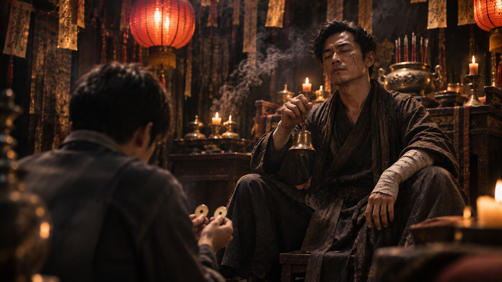
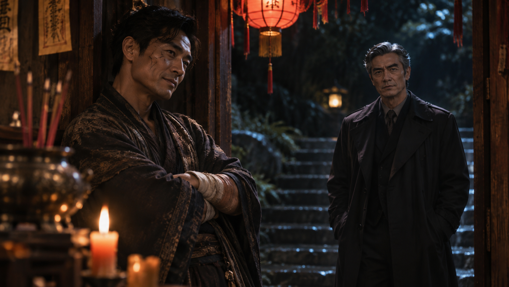
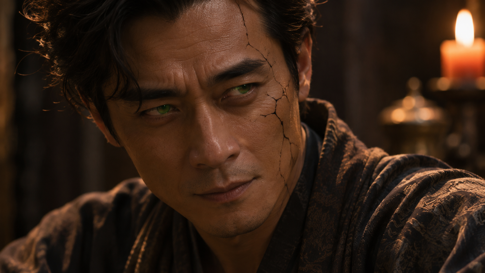
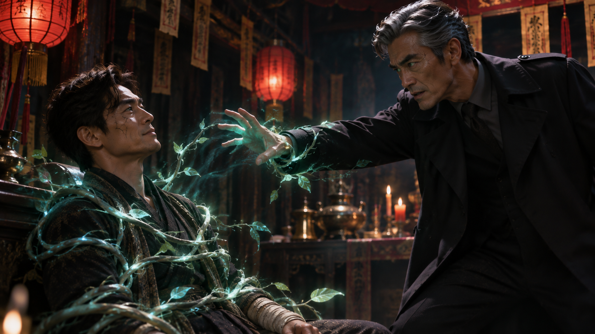
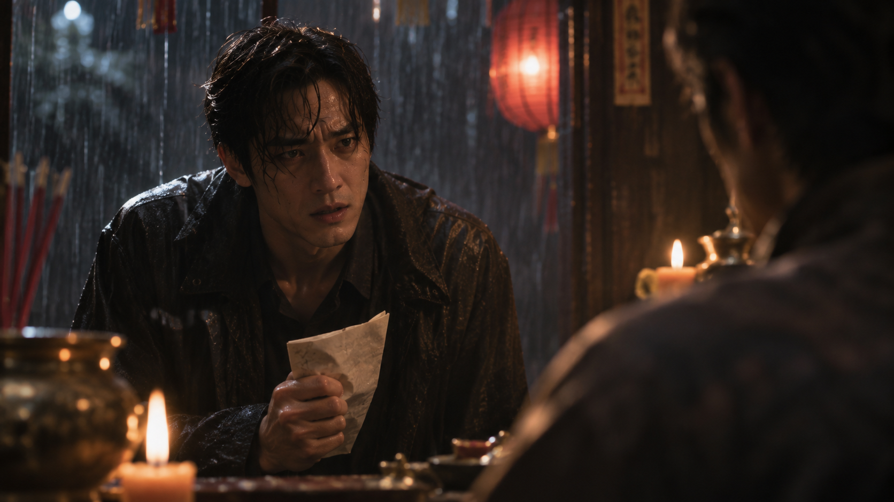
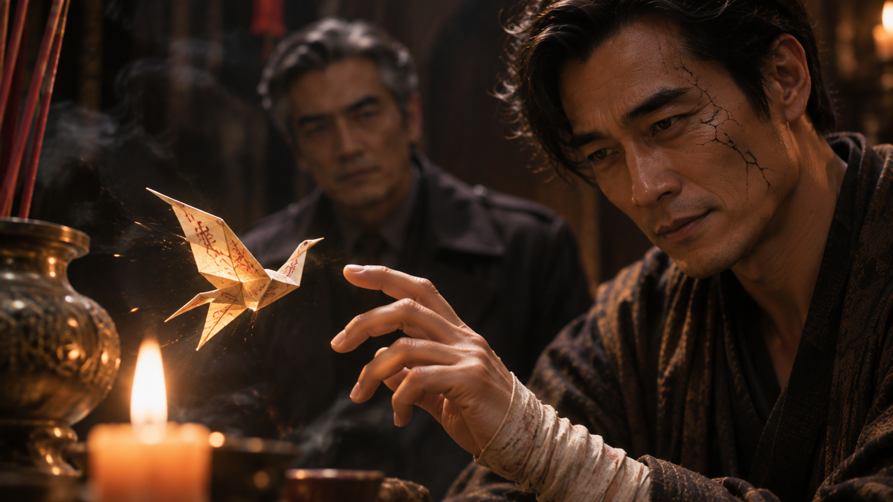

WHITE MAGIC ART STUDIO
第十六章
斷紙道士
香灰緩緩落在木板地上。
幾盞紅燈籠懸在屋簷下，燭火隨著夜風輕輕搖晃，將斑駁的光影投在私廟的木牆上。
供桌前，一名青年跪得筆直。
他的雙手微微發顫，掌心緊握著兩枚硬幣。
一正，一反。
像是把自己的命運，全押在這兩枚不起眼的銅板上。
「道、道長……」
青年顫聲開口。
「我真的只要跪著就好了嗎？」
「不然呢？」
一道懶洋洋的聲音從前方傳來。
「你還想幫忙？」
坐在矮凳上的男人沒有睜眼。
他手持銅鈴，另一隻手輕輕搭在膝上，神情平靜得彷彿只是準備替人算命。
男人名叫鄭文祿。
他的外貌比實際年紀年輕許多，看起來不過三十多歲。眉眼深邃，輪廓銳利，鬢邊摻著些許灰白髮絲。
只是那張尚稱俊朗的臉上，右眼下方有一道模糊的黑色裂痕，沿著皮膚向下延伸，最後消失在衣領裡。
那不像普通的疤痕。
倒像某種東西，正從他的身體深處緩慢蔓延。
文祿身穿一襲破舊道袍，袖口綁著層層麻布。
尤其左手，幾乎完全藏在布條之下。
偶爾隨著動作露出的皮膚，竟呈現出紙張般的乾裂紋理，細小的黑紋隱約浮動，像被火燒過，卻始終沒有燃盡。

叮。
銅鈴輕響。
文祿緩緩閉上眼睛。
「恭請太上道君、三官大帝、五營兵將、護法神明……」
他的聲音低沉而乾澀。
「借吾一令，現身。」
香爐裡的煙霧忽然停滯。
青年不安地抬起頭。
「道長……？」
「噓。」
文祿抬起一根手指。
「它正在聽。」
青年立刻閉上嘴。
下一秒。
他身後的燭火，猛地向同一個方向傾斜。
牆角的陰影開始扭動。
原本平整的黑影逐漸隆起，像有什麼東西正從牆壁裡向外爬出。
一張扭曲的臉孔，緩緩浮現。
「鄭……文祿……」
那聲音沙啞得不像人類。
文祿睜開眼。
「喔？」
他微微挑眉。
「認識我啊。」
黑影發出低沉的笑聲。
「背叛主人的狗……」
文祿臉上的笑意淡了些。
「……又來了。」
黑影猛地撲向你。
「你這個殘破的叛徒——！」
「起。」
文祿只是輕輕抬手。
供桌上的數張符紙瞬間飛起。
唰！
薄薄的黃紙在半空中急速翻折，原本柔軟的邊緣忽然繃得筆直，化作一道道銳利的紙刃，從不同方向切入黑影周圍。
黑影猛地退開。
然而那些符紙並未落地。
它們在空中重新展開、折疊，紙面上的符紋彼此銜接，轉眼間化作數條細長的紙索，牢牢纏住黑影。
「你以為這種東西困得住我？！」
黑影劇烈掙扎。
文祿看了它一眼。
「不然呢？」
他抬起左手。
麻布底下，隱約傳來細微的摩擦聲。
彷彿有無數張紙，正沿著他的手臂翻動。
「我還得請你喝茶嗎？」
文祿雙指一併。
「縛。」
紙索瞬間收緊。
牆上的符紙也在此刻紛紛脫落，無風而起。
有的摺成猛獸的形狀，有的延展成層層交錯的紙環，將黑影困在半空。
黑影不斷咆哮。
「你忘了自己以前是什麼東西嗎？！」
文祿的手指微微一頓。
黑影咧開嘴。
「你以為披上這身道袍，就能變回人——」
「我說。」
文祿打斷它。
聲音不大。
卻讓整間私廟的空氣驟然一沉。
「你話是不是太多了？」
他輕輕一揮手。
數十張符紙同時收攏。
「吾奉天火之命，侵骨者，焚。」
符紋亮起。
一瞬間，黑影被困入層層紙符之中。
伴隨一聲尖銳的嘶吼，黑影迅速消散，只留下幾片焦黑的紙屑，緩緩飄落。
啪。
最後一張符紙落回供桌。
整間私廟恢復寂靜。
青年癱坐在蒲團上，大口喘著氣。
「結、結束了？」
文祿瞥了他一眼。
「嗯。」
「真的？」
「……」
文祿沉默片刻。
「不然你想再確認一次？」
「不用！不用！」
青年連忙搖頭。
文祿從袖中抽出一張摺好的紅紙，遞給他。
「帶回去，壓枕頭底下。」
「這是護身符嗎？」
「算是。」
「要放多久？」
「七天。」
青年小心翼翼地收好。
「謝謝道長！真的太感謝您了！」
他連連鞠躬，匆忙離開私廟。
文祿目送他走遠。
直到腳步聲消失在山路盡頭，他才輕輕咳了兩聲。
他低頭看著自己的左手。
纏繞在手腕上的麻布，不知何時又滲出幾道細細的黑紋。
文祿皺了皺眉。
重新將袖口拉好。
「……真是的。」
他站起身，準備關上廟門。
卻在門縫間，看見一道熟悉的身影。
男人穿著深色風衣，站在石階下。
灰白的髮絲被夜風吹得微微凌亂，肩背略顯沉重，目光卻依舊銳利。
文祿停下動作。
片刻後，嘴角慢慢浮起一絲笑意。
「哎呀。」
他靠在門邊。

「這不是梁董事長嗎？」
梁晉輝沒有回答。
只是緩緩踏上石階。
文祿打量了他一眼。
「這麼晚跑來山裡……」
他笑了笑。
「該不會也是來求平安符的吧？」
「沒想到……」
晉輝走進私廟，目光掃過滿牆的符紙。
「一個半人半魔的傢伙，現在竟然替人驅魔。」
文祿關上木門。
「混口飯吃而已。」
「這在你們眼中，應該算是背叛吧？」
文祿停下腳步。
他轉過頭，看著晉輝。
「這話從你口中說出來，倒是挺有趣的。」
「……」
「當年你為了自己的某些利益，不也找上我這個『背叛者』？」
晉輝眉頭一沉。
「是你先有求於我。」
「沒錯。」
文祿坦然點頭。
「但你還是答應了，不是嗎？」
他走到供桌旁，拿起茶壺。
「而且……」
文祿一邊倒茶，一邊漫不經心地說：
「你還把我們兩個人的記憶都動了手腳。」
晉輝沒有說話。
文祿將其中一杯茶推向他。
「我只記得，我們確實做過一場交易。」
他抬眼。
「至於我到底替你做了什麼……」
文祿輕輕敲了敲自己的額頭。
「這裡，乾乾淨淨。」
晉輝望著那杯茶。
「……那是必要的。」
文祿笑了。
「是嗎？」
「……」
「你這個人啊。」
文祿端起自己的茶杯。
「總有辦法把每件事都說得很有道理。」
晉輝的眼神微微一沉。
「我今天不是來跟你談過去的。」
「我知道。」
文祿喝了一口茶。
「你每次來，都有事要我幫忙。」
晉輝沒有理會他的調侃。
他向前一步。
「我最近看見了一段記憶。」
文祿抬起頭。
「記憶？」
「裡面有個擅長操縱火焰的男人。」
晉輝盯著他。
「他的眼睛，是枯葉般的褐黃色。」
文祿端著茶杯的手，微微停住。
那動作很短。
卻沒有逃過晉輝的眼睛。
「你認識他。」
文祿沉默片刻。
「……認識。」
「他是你的同伴？」
文祿將茶杯放下。
「曾經的。」
晉輝皺起眉。
「所以你們魔君最近到底在策劃什麼？」
文祿忽然笑了一聲。
「你們？」
他抬起頭。
「梁晉輝，你是不是忘了，我早就不在他們那邊了？」
「但你曾經是魔君之一。」
「曾經。」
文祿再次強調。
「而且，這件事你們亞洲聖術會不是最清楚嗎？」
晉輝沒有回答。
文祿的笑容逐漸淡去。
「托你們的福，我現在連想過自己的日子，都沒那麼容易。」
「……」
「當初說得倒是好聽。」
文祿望著他。
「結果呢？」
他輕輕嗤笑。
「離開了魔皇，卻還得看你們的臉色。」
晉輝皺起眉。
「這件事與我無關。」
「我知道。」
文祿回答得很快。
「你當然什麼都不知道。」
他停頓了一下。
「就像你不知道，他們現在還拿我女兒的事牽制我一樣。」
晉輝的神情微微一變。
「……你女兒？」
文祿沒有繼續說下去。
他低頭整理桌上的法器。
一串珠玉輕輕相碰，發出細碎的聲響。
過了片刻，他忽然停下動作。
「……等等。」
晉輝皺眉。
「什麼？」
文祿緩緩抬起頭。
他的目光，重新落在晉輝臉上。
「我認得這種眼神。」
晉輝的神情微微一僵。
「……你想說什麼？」
文祿沒有回答。
他只是靜靜看著對方。
下一秒。
那雙原本深褐色的眼睛，瞳孔周圍忽然泛起一抹黯淡的翠綠光芒。
木瞳術——窺探慾望。

晉輝的表情瞬間變了。
「鄭文祿！」
然而文祿已經看見了。
不是記憶。
也不是晉輝心裡所有的想法。
而是此時此刻，在那個男人心底最強烈、最難以壓抑的渴望。
文祿微微一怔。
隨後，眼中的綠光慢慢淡去。
「……原來如此。」
他低聲說。
晉輝冷冷地看著他。
「把你那雙被黑暗污染的木瞳收起來。」
文祿沒有生氣。
反而露出一抹意味深長的笑容。
「又是為了孩子啊。」
晉輝的目光微微一沉。
「……少管閒事。」
文祿輕輕笑了。
只是那笑意裡，多了一點說不清的寂寞。
「真巧。」
他端起茶杯。
「十年前，也有個年輕人，帶著差不多的心情來找我。」
晉輝沒有說話。
文祿若有所思地摸了摸下巴。
「他叫什麼來著……」
他停了一下。
「梁……」
晉輝的眉頭慢慢皺起。
「梁景皓？」
空氣，忽然安靜了。
晉輝猛地抬頭。
「……你說什麼？」
文祿看著他。
「梁景皓。」
他慢慢重複了一次。
「怎麼？」
「你怎麼會知道他的名字？！」
下一秒。
供桌下方的木板猛地震動。
青藍色的藤蔓自地面竄起，沿著桌腳迅速攀爬，轉眼便纏住文祿的手腕與肩膀。
文祿低頭看了看。
「……喂。」
晉輝的眼中，翠綠色光芒微微浮現。

「你對景皓做了什麼？」
文祿沒有掙扎。
「別緊張。」
他抬起頭。
「那孩子只是來問我一些事。」
「什麼事？」
「我連他一根寒毛都沒碰。」
「我問你，他來找你做什麼！」
文祿望著晉輝。
片刻後，忽然笑了。
「你這個做父親的……」
他輕輕搖頭。
「還真是什麼都不知道啊。」
晉輝的臉色越來越難看。
文祿這才慢悠悠地開口。
「那孩子問我……」
他停頓了一下。
「有沒有辦法，讓一個還沒出生的孩子，在沒有母體的情況下繼續長大。」
晉輝怔住。
「……什麼？」
文祿看著他。
「聽不懂嗎？」
「……」
「他想留下那個孩子。」
晉輝的呼吸微微一滯。
十年前。
那通電話。
景皓憤怒的聲音，忽然再次浮現在他的腦海。
「我從頭到尾都沒有選擇的機會！」
晉輝的手指慢慢收緊。
「難道他……」
文祿微微挑眉。
「怎麼？」
「……」
「他沒跟你說？」
文祿望著他。
「一個還沒準備好當父親的年輕人，跑到我這種地方來求辦法。」
他輕輕嘆了口氣。
「我當時還想，這孩子的家人到底在哪裡？」
晉輝沒有說話。
文祿忽然像是想到什麼。
「等等。」
他看著晉輝。
「你該不會……」
他的語氣慢慢沉了下來。
「當初也勸他把孩子拿掉吧？」
晉輝猛地抬頭。
「你——！」
他的眼中，翠綠色光芒驟然亮起。
木瞳術——記憶。
文祿的瞳孔微微一縮。
下一秒。
一段十年前的畫面，猛然湧入晉輝眼前。
昏暗的私廟裡。
一名年輕男子站在供桌前。
衣服被雨水打濕，頭髮凌亂地貼在額前。
他看起來很疲憊。
卻始終沒有坐下。

「……你就是鄭文祿？」
年輕男子問。
文祿抬起頭。
「是啊。」
「我想問你一件事。」
「說吧。」
年輕男子沉默片刻。
「如果……」
他握緊手中的紙張。
「一個孩子還沒辦法離開母親的身體……」
他停了一下。
像是在努力讓自己把話說完整。
「有沒有別的方法，能讓他活下來？」
文祿望著他。
「……你知道自己在問什麼嗎？」
年輕男子點頭。
「知道。」
「這可不是普通的聖術。」
「我知道。」
「就算真的有辦法，也不代表你承受得起。」
年輕男子沉默了。
文祿原以為，他會因此退縮。
然而片刻後。
那名年輕人只是抬起頭。
「……拜託你。」
他的聲音很輕。
卻沒有動搖。
「我想讓他活下來。」
畫面驟然中斷。
晉輝猛地回過神。
眼中的綠光逐漸消散。
纏繞在文祿身上的忘憂木，也隨之慢慢鬆開。
文祿活動了一下手腕。
「看夠了？」
晉輝沒有回答。
只是怔怔地望著地板。
十年前，他曾經認為景皓只是在逃避責任。
可如今，他卻在別人的記憶裡，看見了長子當年那副模樣。
那個他一心想培養成木翼的孩子，竟然在自己毫不知情的地方，獨自尋找留下另一個生命的方法。
晉輝緩緩握緊拳頭。
「……我到底做了什麼……」
聲音低得幾乎聽不見。
文祿望著他。
原本準備出口的嘲諷，忽然停在嘴邊。
他沉默了片刻。
最後，只是輕輕嘆了口氣。
「梁晉輝。」
晉輝沒有抬頭。
「有時候……」
文祿看著他。
「孩子想要的，未必是你替他安排好的那條路。」
晉輝的目光微微一顫。
文祿卻沒有再說下去。
他重新坐回矮凳，端起茶杯。
過了一會兒，才緩緩開口。
「說起來……」
晉輝抬頭。
「我倒是聽過一首預言詩。」
「預言詩？」
「嗯。」
文祿望著杯中的茶水。
「那首詩，記載了一種極為古老的詛咒儀式。」
晉輝皺起眉。
「什麼詛咒？」
文祿沒有立刻回答。
他抬眼看向晉輝。
「我還不能確定。」
「……」
「但你兒子的孩子……」
他停頓了一下。
「恐怕與那首預言詩裡的某個條件，有些關係。」
晉輝的神情瞬間變了。
「你是說……景皓的孩子？」
文祿點頭。
「只是猜測。」
「到底是什麼儀式？」
文祿沒有回答。
晉輝向前一步。
「鄭文祿！」
文祿卻忽然笑了。
他緩緩端起茶杯，輕輕吹開表面的熱氣。
「我說……」
他看向晉輝。
「不如我們再來做一場交易？」
晉輝皺起眉。
「交易？」
「嗯。」
文祿微微一笑。
「像當年那樣。」
晉輝沉默片刻。
「……你想要什麼？」
文祿沒有立刻回答。
只是用指腹輕輕摩挲杯沿。
那雙總帶著幾分戲謔的眼睛，此刻卻安靜了下來。
「我想見我女兒。」
晉輝一怔。
「……你女兒？」
「嗯。」
文祿輕輕點頭。
「我知道她還活著。」
「可是亞洲聖術會……」
「我知道。」
文祿打斷他。
「我知道他們不會輕易讓我見她。」
他停頓片刻。
「所以，我才需要你幫忙。」
晉輝望著他。
「你想讓我跟亞洲聖術會交涉？」
「不一定。」
文祿搖頭。
「只要能讓我親眼見她一面。」
他望向供桌旁那張褪色的照片。
照片裡，一個小女孩站在陽光下，笑得十分燦爛。
「讓我知道，她現在過得怎麼樣。」
他的聲音依舊平靜。
「這樣就夠了。」
晉輝沒有說話。
他看著眼前這個男人。
曾經的魔君。
如今卻只能坐在這間偏僻的私廟裡，等待別人允許他見自己的女兒。
那一刻，晉輝忽然感受到一種難以言喻的沉重。
他想起景皓。
想起景毅。
也想起自己曾經以為，只要替孩子安排好一切，就能讓他們少走一些彎路。
可如今，他卻連自己究竟錯過了什麼，都不敢確定。
沉默許久。
晉輝終於緩緩點頭。
「……我會想辦法。」
文祿抬起頭。
「真的？」
「但我需要時間。」
晉輝看著他。
「而且，我不能保證一定成功。」
文祿輕輕笑了。
「有你這句話，就夠了。」
晉輝沒有跟著笑。
「不過……」
他向前一步。
「現在同樣重要的是，你究竟能怎麼幫我？」
文祿端起茶杯。
「你想知道魔君的計畫？」
「還有那首預言詩。」
文祿若有所思地點了點頭。
「嗯……」
他輕啜一口茶。
隨後，緩緩放下杯子。
「那可不是幾句話，就能說清楚的事。」
晉輝皺眉。
「什麼意思？」
文祿沒有回答。
只是伸出左手，輕輕碰了碰桌上那張泛黃的符紙。
紙張自行折起。
一道。
兩道。
最後，化作一隻小小的紙鳥。
紙鳥在燭火旁輕輕拍動翅膀。
文祿望著它，眼神深遠。

「梁晉輝。」
「……」
「有些事情，你知道得越多……」
他輕輕一笑。
「就越難當作什麼都沒發生過。」
紙鳥振翅飛起。
掠過燭火，消失在私廟深處的陰影裡。
晉輝沒有移開視線。
「……我早就沒有退路了。」
文祿看了他一眼。
隨後，嘴角慢慢浮起一絲笑意。
「那就好。」
窗外的山風再次吹過。
供桌上的燭火輕輕搖晃。
兩個曾經做過交易的男人，再一次坐在同一張桌前。
只是這一次——
他們都還不知道，自己即將付出的代價，究竟是什麼。